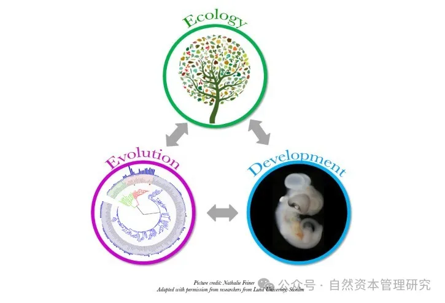

第四章 人与自然相互作用的微观机理
“万物各得其和以生，各得其养以成。” 中华文明历来强调天人合一、尊重自然。人与自然和谐共生，是中华民族生命之根，是中华文明发展之源。 生态文明的核心就是坚持人与自然和谐共生。了解人与自然和谐共生的机理对于理解自然资本管理、生态文明建设都具有非常重要的意义。
现代科学的进步和发展极大地促进了人们对人与自然相互作用微观机理的理解。近年来，随着研究方法和技术的不断创新，科学家们在这一领域取得了许多突破性的发现。这些新的认知不仅深化了我们对自然界复杂系统的理解，也为人类如何更好地与自然和谐共处提供了新的思路和方法。本章将重点介绍近几年在人与自然相互作用微观机理方面的一些最新科学发现，探讨这些发现对我们理解和管理人与自然关系的重要意义。
社会经济代谢研究
社会经济代谢研究（SMR：Sociometabolic research）通过提供一个框架来量化并分析人类集体活动对自然资源的需求和影响，有助于深入理解人与自然相互作用的微观机理。这个研究对于理解人与自然相互作用在微观层面上，具有以下几个方面的帮助：
-
资源使用模式：它帮助我们理解自然资源如何在社会系统中被提取和利用，以及这个过程对生态系统的影响。
-
能量和物质流动：通过跟踪能量和物质在生态系统和社会系统间的流动，我们可以识别可能的环境压力点和效率损失，从而优化使用策略。
-
环境影响量化：研究提供量化工具，比如生态足迹和碳足迹，以评估人类活动的环境影响，如气候变化和生物多样性丧失。
-
支持可持续性：社会经济代谢研究有助于设计更可持续的生产和消费模式，以减少对自然的负面影响并提高资源效率。
-
洞察系统互动：通过研究社会经济代谢，研究人员可以更好地理解社会系统与生态系统之间复杂互动关系的动态性。
-
政策制定和规划：该领域的研究成果可以指导政策制定和城市规划，以促进可持续发展，如通过改变土地使用模式、优化交通系统或推广循环经济实践。
-
提升环境意识：对社会代谢模式的了解可以加强公众对于人类活动环境后果的认识，进而潜在地引导更环保的生活方式和消费习惯。
-
韧性和适应性：在面对环境变化时，对社会经济代谢的理解能够帮助增强系统的韧性和适应性，提供对冲策略以应对资源短缺或环境压力。
社会经济代谢研究是关于分析社会如何通过获取、转换以及分配能量和物质资源来维持其活动和结构的研究领域。这种研究借鉴了生态系统的代谢概念，着眼于人类集体如何与其环境相互作用、利用自然资源、产生废物和污染，并在这个过程中如何影响环境变化。

生态系统的代谢概念，有时称作生态代谢（ecological metabolism），类似于个体生物体的生物化学代谢过程，它涉及到生态系统内能量和物质转换和循环的一系列过程。这个概念帮助我们理解生态系统如何获取、处理和转换能量与营养素，以及这些物质如何在生态系统中的不同部分间流动。
生态代谢主要包括以下几个方面：
-
初级生产过程：在这个过程中，光合作用的植物（生产者）使用太阳能将水和二氧化碳转换成葡萄糖和氧气，这是生态系统能量流的基础。
-
消费者活动：植食性动物（一级消费者）吃掉植物，而肉食性动物（高级消费者）则吃掉其他动物。这些步骤中的能量和物质转换形成了生态系统的食物网。
-
分解者作用：在生态系统代谢中，死去的生物组织和有机废弃物由分解者（如细菌和真菌）分解，从而释放其中的营养物质回到土壤和水域中，为初级生产过程提供营养。
-
营养循环：生态代谢还包括碳循环、氮循环、磷循环等生物地球化学循环，这些循环涉及到在大气、土壤、水体和生物体之间转移的营养元素。
生态系统的代谢是高度复杂且动态的，不仅依赖于生态系统内部因素，如物种组成和生态位结构，而且受到外界环境条件（例如气候、土壤类型和水源）的影响。这个概念在理解生态系统如何支撑生命、处理废物和维护生物多样性方面至关重要，同时对于人类社会经济活动的影响和可持续性管理同样重要。通过研究生态代谢，我们能够更全面地理解生态系统的功能、稳定性和可持续性，以及人类干预可能带来的后果。
社会经济代谢研究借鉴了生态系统的代谢概念来发展其理论基础，将自然界的能量和物质流动的原理应用于人类社会的活动。具体来说，社会经济代谢研究利用了以下几个生态代谢的关键概念来构建其理论框架：
-
物质循环：正如生态系统中物质在不同组分之间循环（例如，碳循环和氮循环），社会经济代谢也研究物质在自然环境和社会经济系统之间的流动。借鉴了这个概念来探究人类如何从环境中提取资源，这些资源是如何流经经济体系，最终转化为废物并重新返回环境中。
-
能量转换：与生态系统内部生物通过食物链转换和存储能量的方式类似，社会经济代谢研究关注人类社会如何获取、使用和转换能量，特别是人类如何转换化石燃料、可再生能源及其他能源形式来满足其需求。
-
生产和消费过程：在生态系统中，生产者（植物）和消费者（动物）在能量和物质流动中发挥作用。社会经济代谢借鉴了这一概念，分析社会生产系统（工业、农业等）和消费系统（家庭、服务等）如何运作和相互依赖。
-
系统互动和反馈循环：生态系统中的物质和能量流动伴随着复杂的互动关系和反馈循环。社会经济代谢分析在这些流动中可能导致的环境变化，以及环境变化如何反过来影响社会经济系统。
-
韧性和适应能力：生态系统研究中的韧性和适应能力概念也被应用于社会经济代谢，探讨社会体系如何应对资源短缺、环境变化和社会经济冲击。
-
可持续性：生态系统的可持续性概念同样适用于社会经济系统，研究如何管理和维护自然资源的长期可用性，并确保社会的未来发展与自然环境的健康和平衡相协调。
通过这样的借鉴，社会经济代谢研究发展出了一套用于分析人类活动如何塑造和被自然系统制约的理论工具。具体而言，社会经济代谢的研究通常涉及以下几个方面：
-
物质流分析（Material Flow Analysis, MFA）：这种分析关注从环境中提取物质、在经济体系中的流动、以及最终以废物形式返回到环境中的过程。例如，研究可能关注某种矿物的开采、加工、使用和废弃过程。
-
能量流分析（Energy Flow Analysis, EFA）：与MFA类似，但专注于研究能量的获取、转换、使用和损失。
-
代谢效率：探索在物质和能量转换过程中的效率，试图提高资源使用的可持续性和减少环境影响。
-
快速夺取/释放分析（Pulse Analysis）：研究特定时间内大量资源的快速消耗，通常与经济增长或突发事件（如战争或自然灾害）相关联。
-
社会经济系统的可持续性评估：分析代谢模式如何影响环境和社会的长期可持续性，包括环境影响、资源枯竭风险和社会经济不平等等问题。
-
转型和治理：探讨如何调整社会经济代谢模式以促进可持续性转型，这涉及政策、技术创新和社会行为改变等方面。

物质流分析
物质流分析（MFA）是社会经济代谢研究中用来定量评估物质在人类经济活动中从获取到最终排放的整个流程的一种方法。MFA的主要理论基础是守恒定律，尤其是质量守恒定律，即物质在一个封闭系统内不会被创造或消灭，只能通过系统边界进入或离开，或者在系统内部进行转移。
示例1.1 : 对一个国家的铜资源流动进行物质流分析
系统界定：首先定义MFA的系统边界，例如选择一国范围内铜的生产、消费和废弃过程，确定研究的时间范围，比如一年。
数据收集：收集铜矿的采集数据、进口和出口的铜矿和铜产品数量、铜的炼制和制造数据、消费数据以及废弃物和回收数据。这些数据可以通过矿业统计、贸易记录、生产和消费报告等途径获得。
建模：根据质量守恒定律，构建铜在整个社会经济系统内的流动模型。模型通常包括铜矿资源的输入（生产加进口），经过各种加工和制造阶段的转变，铜产品的使用，以及最后的铜废弃物的输出处理（通过回收或废置）。
账户平衡：确保所收集到的数据在系统中质量平衡，即系统范围内铜的输入量、蓄积量、转化量以及输出量相匹配。如果发现不平衡，则可能需要调查隐藏的流动或数据不准确。
分析：利用整理好的铜流动数据来分析铜的使用效率、识别关键的铜消费领域、评估回收率、预测未来需求趋势，并识别可能的环境影响和资源短缺风险。
政策建议：基于MFA的结果提出改善物质效率、增强回收率和减少环境影响的策略。例如，可以提倡产品设计中的铜使用量减少、改进回收技术和系统、或者通过法规限制铜矿的开采。
通过对铜或其他物质的流动进行MFA，研究人员和决策者能够更全面地了解物质从环境中的获取到最终处置的全流程，这有利于识别资源使用中的关键问题和改进建议，进一步促进可持续性和资源效率。
看一个具体数据示例，来说明MFA的分析方法：
实例1.2 一个城市的水资源管理
目标与系统边界：设定目标为评估城市X在2020年的水资源管理效率。系统边界被定义为城市X行政区域内的一切水资源的流动和消耗。
数据收集：搜集关于城市用水的数据，包括： 自然降水量：1,200 mm/年 河流流入量：500 毫升/秒 地下水提取量：100,000 立方米/年 住户用水：30,000 立方米/日 工业用水：50,000 立方米/日 农业用水：20,000 立方米/日 水资源的再生率和损失，包括蒸发量、渗漏量以及未经处理的废水排放量。
建立水代谢流程模型：构建城市X的水流动图，明确展示各来源如雨水、河流、地下水的输入，不同用水部门（例如住宿、工业、农业）的消耗，以及最终水的输出，如蒸发、排放等。
账户平衡：确保水资源的账户在平衡，即所有的输入、存储、使用和输出在数量上应当相匹配。 总输入 = 降水量 + 河流流入量 + 地下水提取量 总输出 = 住户用水 + 工业用水 + 农业用水 + 蒸发 + 渗漏 + 未处理排放 效率和损失分析：计算水的利用效率和系统损失。 有效用水量百分比 = （住户用水 + 工业用水 + 农业用水） / 总输入 * 100% 系统损失量 = 总输入 -（住户用水 + 工业用水 + 农业用水 + 明确的蒸发和渗漏损失） 可持续性评估：分析城市的水代谢模式是否可持续，并探讨改进策略，如提高水回收再利用率、减少渗漏损失、改善废水处理设施等。 政策制定支持：基于分析结果，向城市管理者提供政策建议，如改进水资源管理政策、提高用水效率、鼓励节水技术应用等。 实施与监控：执行新政策并定期监控其效果，调整策略以应对新挑战。
能量流分析
能量流分析（EFA）是在社会经济代谢研究中用于评估能量转换和分布的一种方法。它借鉴了生物体内能量转换和生态系统能量流动的概念，应用到人类社会，以理解能量如何在社会经济系统中辐射和转换。EFA的理论基础是能量守恒定律，即在一个封闭系统中，能量既不会被创造也不会被消灭，而是从一种形式转换到另一种形式，或从系统的一个部分转移到另一个部分。
示例2: 一座城市能量流分析
系统界定：首先明确研究的范围和时间界限，例如可以是一座城市在一年之内的能量消耗情况。 数据收集：搜集该城市在设定时间内的能源供应数据，包括所有能源输入，如化石燃料（煤炭、石油、天然气）、电能、和可再生能源（太阳能、风能、水能等）。同时记录能源的转化和使用数据，如在发电站、交通系统、工业和住宅等不同部门的消耗。 模型建立：借助流程图和数据模型，构建能源从供应链到消费者的整个流动路径，包括生产、转化（例如发电）、分配、消费、效率损失以及可能的能量回收。 账户平衡：检查系统内的能量平衡，确保所有的能量输入、输出和存储在模型中符合能量守恒原则。若能量账户不平衡，此时需要检查数据丢失、测量错误或未记录的能量流动。 分析和诊断：分析能源的使用效率，如各个部门的能量转换效率，识别能量流中的重要环节，以及找出能量使用中的浪费或不效率。还可以分析发电方式对于城市能源可持续性的影响，例如燃煤电站与太阳能光伏设施的比较。 政策建议：基于能量流分析结果，提出减少能源浪费、提高能量使用效率、优化能源结构（如提升可再生能源比重）以及相应的政策建议。 预测和规划：利用EFA结果进行未来能源需求和供给的预测，制定长期的能源发展战略和规划。
通过能量流分析，可以更加清晰地了解城市或社会经济系统的能源状况，并为提高能源效率、实现能源转型、减少温室气体排放等目标提供数据支持和策略方向。这有助于推动社会经济系统向更可持续的能源消费模式转型。
代谢效率
在社会经济代谢研究中，代谢效率是指社会系统中资源和能量使用的效率。它描述了输入（如原材料和能源）转换为有用输出（如产品和服务）的效率程度，以及在这个转换过程中伴随的废物和排放的最小化。这一概念借鉴了生物系统中物质和能量转换的效率概念。
进行社会经济代谢研究中代谢效率的分析，其主要理论基础通常包括以下几个方面：
- 热力学第一定律：能量守恒定律，指出能量不会凭空产生或消失，只是从一种形式转换为另一种形式。
- 热力学第二定律：表明能量转换过程中，部分能量会以不可用的形式（如热能）散失到环境中。
- 系统分析：对社会经济系统的边界和组成部分进行定义和划分，以理解和量化系统的输入和输出。
示例3: 一个造纸厂的代谢效率分析的例子
选择特定工业系统：比如，选取一家造纸厂作为研究对象。
数据收集与定量分析：收集有关原材料（如木材）、能源（如水、电、化石燃料）输入，以及产品输出（如各种纸品）和废物输出（如废水、废气、固体废弃物）的数据。 建立流程图：建立该工业系统的流程图，包括所有原材料和能源的输入流程、生产过程、废物处理以及产品输出。 计算效率：计算原材料和能源的利用率以及转换效率，例如多少百分比的木材和能源转换成了产品，以及有多少变成了废物。此过程需要考虑转换损失和系统内部循环使用的比例。 评估环境影响：分析代谢效率低下的环节对环境所造成的影响，如高废物产出或高能源消耗对自然资源的压力和对环境的污染。 寻找改进机会：识别能够提高原材料和能源利用率的操作和技术更新，减少废物产出并减少环境污染。 建议实施策略：提出改进工业生产过程的具体建议，改善代谢效率，促进资源节约和环境保护。
通过这种方法，造纸厂可以评估其操作的代谢效率，辨识低效的环节并采取措施来改善。提高代谢效率通常涉及改进工艺流程、提高能源利用率、采用更有效的废物管理和回收策略，最终实现生产过程的可持续性提升。这种代谢效率的提高有益于降低生产成本、减少对环境的影响并提高企业的市场竞争力。
快速夺取/释放分析
快速夺取/释放分析（Pulse Analysis）在社会经济代谢研究中是指对一定时间内快速变化的物质或能量流动进行的分析，特别是在那些引发显著社会经济或环境影响的事件或周期中。这种分析的目的是理解这些快速变化对系统的长期可持续性、韧性和适应能力的影响。快速夺取或释放通常与资源的大规模开采、消耗或排放相关联，如突然的经济增长、技术变革、战争或自然灾害。基于的主要理论基础通常是系统动力学（System Dynamics），它考虑了系统中随时间变化的存量和流量。
示例4: 自然灾害-洪水
事件选择：选择一个研究对象，如一场突发的自然灾害——例如洪水。
数据收集：收集数据包括但不限于洪水发生前后水资源的状况、地区人口的疏散情况、农业和工业的损失、基础设施损毁情况等。 系统界定：界定受灾区域的系统边界，包括边界内的所有相关非物质和物质流动。 分析快速变化：对灾害发生前后地区的资源消耗、产出和废物排放进行对比分析，找出由于灾害引发的突发变化，这些变化可能包括农作物损失、水资源污染和基础设施破坏。 评估影响：评估这些快速变化对经济、社会和环境的影响。比如基于灾害带来的资源损失评估，估算经济损失；结合人口疏散状况，评估社会影响；基于水资源污染情况，评估环境冲击。 系统响应分析：理解系统如何对这些急剧变化做出响应。例如，分析政府、企业和民众如何快速适应资源短缺，采取何种紧急措施和长期恢复策略。 建立模型和模拟：使用系统动力学建模方法，创建快速夺取/释放事件的模拟模型，通过模拟研究不同的恢复策略。 制定政策建议：根据分析结果提出政策建议，以增强系统对未来可能的快速变化事件的韧性和适应性，减少这些事件的负面影响。 评估影响：评估这些快速变化对经济、社会和环境的影响。比如基于灾害带来的资源损失评估，估算经济损失；结合人口疏散状况，评估社会影响；基于水资源污染情况，评估环境冲击。 系统响应分析：理解系统如何对这些急剧变化做出响应。例如，分析政府、企业和民众如何快速适应资源短缺，采取何种紧急措施和长期恢复策略。 建立模型和模拟：使用系统动力学建模方法，创建快速夺取/释放事件的模拟模型，通过模拟研究不同的恢复策略。 制定政策建议：根据分析结果提出政策建议，以增强系统对未来可能的快速变化事件的韧性和适应性，减少这些事件的负面影响。
通过这种分析，决策者可以更好地理解和管理快速变化事件对社会经济系统的影响，为风险管理和长期可持续发展战略提供科学依据。
转型和治理
社会经济代谢研究中的转型和治理关注于如何引导社会系统进行必要的变革以实现可持续性目标。这涉及了通过政策制定、规划和管理促进资源和能量使用更高效、更环保、更公平。转型和治理基于一系列跨学科理论的集成，包括社会-生态系统的可持续性原则、系统动力学、治理理论、以及创新和转型管理。
示例5: 一个旨在通过促进循环经济转型来增加物质和能源效率的城市或区域
问题识别：首先识别目前社会经济系统中的不可持续实践，如高能耗、高废物产生、资源过度开采。
目标设定：在可持续发展的语境下设定明确的转型目标，例如减少温室气体排放、增加循环材料的使用率、改善社会福祉等。 利益相关方参与：将政府、企业、民间组织和公众等不同利益相关方包括在政策制定和转型过程中，确保所有声音都得到倾听。 政策设计：基于社会经济代谢的分析，设计针对转型目标的政策，这可能包括征税、补贴、法规限制以及教育和宣传等策略。 系统和规划调整：根据转型目标调整城市规划、基础设施建设和管理实践，确保它们促进可持续性。 实施和监测：施行政策和项目，并建立监测制度来跟踪进展和效果。 评估和反馈：定期评估政策和行动的影响，确保它们正在向预定的可持续目标前进，并根据反馈进行调整。 学习和适应：在转型过程中采取学习和适应的方式，当遇到新信息或挑战时，能够调整策略和措施。 创新支持：鼓励和支持技术创新、社会创新和业务模式创新，这些都是推动可持续性转型的关键因素。
以鼓励循环经济为例，政策可能会着力于制定更严格的废物管理法规，提高回收利用率的需求，同时支持循环材料的市场发展和相关的技术创新。这些政策的制定和执行需要全面考量社会经济系统的不同方面，并确保整个体系协同工作以达到可持续发展的目标。
通过转型和治理，社会经济系统能够逐步实现资源和能量的高效利用，减少环境足迹，并增强对社会和生态系统挑战的韧性和适应性。

社会经济代谢研究通过量化分析人类活动中资源和能量的流动，有助于深入理解这些活动如何与自然环境相互影响，揭示社会活动与自然环境相互作用的微观机理。举一个具体的应用示例：
假设城市Y希望理解和减少大气污染问题。首先，研究人员将定义研究的系统边界为城市Y的地理界限，并进行以下的分析：
数据收集与流动图：通过官方统计资料、实地调查和遥感技术收集数据，研究人员记录了城市Y中所有与大气质量相关的物质和能量流动。这包括化石燃料在能源生产、交通、工业生产、家庭暖气和烹饪中的消耗量，以及这些活动产生的污染物排放量（如二氧化硫、氮氧化物、颗粒物）。 代谢效率分析：研究人员会计算各个活动的能量使用效率和相关的污染物产生效率。例如，可以计算每单位能量生产或消耗导致的平均污染物排放量。 环境影响评估：使用MFA的结果，研究污染物在大气中的扩散和积累效应，以及这些污染物如何影响人类健康（呼吸系统疾病）、生态系统（酸雨对植物的影响）、和物质循环（例如，氮的沉积可能改变土壤养分平衡）。 系统动力学建模：基于收集的数据，建立一个系统动力学模型，模拟能源消耗、污染物排放和自然环境相互作用的反馈机制和动力学过程。 政策方案模拟：通过模型模拟不同政策方案的效果，例如提高燃油品质、推广电动车、安装污染控制设备，或增加绿地面积，以理解这些政策如何影响大气污染的代谢流动和环境质量。 治理建议：基于模拟和分析的结果，向城市管理层提供具体的治理建议，向社会大众展开教育和意识提升活动。
通过整个社会经济代谢研究过程，可以明显看出人类活动怎样通过资源和能量消耗改变自然环境（例如空气质量），以及环境反馈机制怎样影响人类社会的健康和福祉。研究结果提供了微观层面上，人类经济活动与自然生态系统相互作用机制的细节，帮助我们更好地理解这些复杂关系并设计有效的干预措施。
示例6：我们可以构建一个关于城市水资源管理的模拟数值案例来展示社会经济代谢研究方法。以下是一个关于城市A水资源使用和污染的分析：
场景设定 城市A面临水资源短缺和污水处理问题，市政府需要数据和分析来改善这些问题。
数据收集与流动图 水资源供应数据： 水库每年供水量：50,000,000立方米/年 河流引水量：30,000,000立方米/年 地下水抽取量：20,000,000立方米/年
用水需求数据： 居民生活用水量：40,000,000立方米/年 工业用水量：25,000,000立方米/年 农业灌溉用水量：10,000,000立方米/年 废水排放与处理： 工业废水未处理排放量：5,000,000立方米/年 居民生活废水处理量：35,000,000立方米/年 废水处理设施处理能力：38,000,000立方米/年
代谢效率与环境影响 评估水资源供需平衡、水资源的使用效率以及废水处理系统的性能。
系统动力学建模 使用收集的数据建立系统动力学模型，模拟地下水水位下降、废水处理能力不足等问题对城市水资源持续性的影响。
政策模拟与建议 演练不同的管理策略如严格的用水配额制度、水价改革、提高工业废水处理标准，并模拟这些措施对城市水资源代谢的可能影响。
模拟数值分析 根据提供的数据和计算，得到以下结果： 城市A的总水资源供应量为1亿立方米/年。 城市A的总用水需求量为7500万立方米/年。 废水处理系统的过载量（即处理缺口）为200万立方米/年，这表明废水处理能力低于废水产生量。
这些数据说明城市A面临着水资源供应大于需求的情形，从理论上讲，应该有足够的水源满足城市需求。然而，废水处理能力不足的问题会给城市的水环境和居民的健康带来挑战。政策制定者需要考虑提高废水处理能力以确保所有的废水都得到处理，同时可能需要进一步的措施来减少总体水的需求，以确保长期的水资源可持续性。
此外，过量的地下水抽取可能导致水位下降和其他长期的可持续性问题。因此，城市管理者可能需要采取措施来控制和规范地下水的抽取，并加强水资源的管理。
城市A的总水资源供应量为1亿立方米/年。 城市A的总用水需求量为7500万立方米/年。 废水处理系统的过载量（即处理缺口）为200万立方米/年，这表明废水处理能力低于废水产生量。
这些数据说明城市A面临着水资源供应大于需求的情形，从理论上讲，应该有足够的水源满足城市需求。然而，废水处理能力不足的问题会给城市的水环境和居民的健康带来挑战。政策制定者需要考虑提高废水处理能力以确保所有的废水都得到处理，同时可能需要进一步的措施来减少总体水的需求，以确保长期的水资源可持续性。
此外，过量的地下水抽取可能导致水位下降和其他长期的可持续性问题。因此，城市管理者可能需要采取措施来控制和规范地下水的抽取，并加强水资源的管理。
通过实际数据和社会经济代谢研究，城市A可以更精准地识别其面临的水资源管理挑战，并为政策变革提供科学依据，旨在解决这些挑战并促进可持续发展。
社会经济代谢研究的优势
社会经济代谢研究在解释人与自然相互作用的微观机理方面的显著优势主要体现在以下几个方面：
社会经济代谢研究通过物质流分析（MFA）和能量流分析（EFA）对资源的完整生命周期进行详尽追踪。这种方法细致地量化了资源从提取、生产、消费到最终废弃的全过程。通过这种详尽的映射，我们能够揭示自然资源利用的微观过程，并识别关键的利用热点和污染源。这种深入的分析为理解资源利用的效率和环境影响提供了宝贵的洞察。
该研究方法采用系统视角和综合性分析，不局限于单一资源或环境问题。相反，它综合考虑多种物质和能量流，以及它们之间的相互影响。这种全面的视角有助于我们理解经济活动对生态系统完整性和服务功能的系统性影响。通过这种方法，我们可以更好地把握人类活动与自然环境之间的复杂互动。
社会经济代谢研究还提供了定量评估环境负荷与污染的方法。它允许我们评估各种经济活动对环境质量的具体影响，包括资源消耗和废弃物产出。通过这种量化分析，我们能够识别产生最大环境压力的经济活动，从而有针对性地提出改进策略和减轻措施。这种方法为环境管理提供了科学的依据。
在资源效率和可持续性评估方面，社会经济代谢研究通过计算输入（资源消耗）和输出（产品和废弃物）的比例，评估经济活动的资源效率和环境影响。这种分析有助于制定提高资源效率、增强循环利用以及减少环境污染的策略，为解决可持续性问题提供了明确的方向。
此外，社会经济代谢研究在促进政策和管理决策方面发挥着重要作用。它提供了支持环境政策制定的实证数据和方法，能够辅助制定更加全面和有效的环境管理措施。基于该研究的建议可以指导政策调整，例如改变废物处理政策或推动能源转型，从而实现更可持续的发展模式。
最后，社会经济代谢研究的一个显著特点是其跨学科的性质。它整合了生态学、环境科学、经济学和社会科学等多个领域的知识和方法，以更好地理解人类社会与自然环境之间的复杂关系。这种跨学科的方法不仅有助于捕捉相互作用的微观细节，还为解决复杂的可持续性问题提供了多维度的视角和工具，使我们能够更全面地应对当前的环境挑战。

生物多样性形成的微观机理
生物多样性的概念
生物多样性是一个多层面的概念，涵盖了生命在地球上的丰富性和变异性。这个概念可以从几个不同的角度来理解，每个角度都揭示了生物多样性的不同方面。
首先，基因多样性指的是生物个体水平的遗传变异。这包括了同种个体之间的基因差异，如不同的遗传变体和基因座位。基因多样性是种群适应性变化和进化的基础，它为物种提供了应对环境变化的能力，确保了物种的长期生存和适应。
其次，物种多样性关注的是不同物种之间的差异性。这通常通过计数一个特定地区内的物种数量来衡量，包含了物种的丰富度和物种之间的均匀度或相对丰度。高的物种多样性通常意味着一个更加稳定和健康的生态系统，因为不同物种之间的相互作用可以增强生态系统的韧性。
第三，生态系统多样性涉及不同的生态系统和生物群落以及它们相互之间的复杂联系和作用。这包括了不同地理区域中的生境类型（如森林、草原、湿地等），以及这些生境中物种间的复杂相互关系，如食物网和生态位。生态系统多样性反映了地球上生命形式的广泛变化，从微小的水生生态系统到广阔的陆地生物群落。
最后，功能多样性指的是生态系统中不同生物所执行的不同生态功能和过程的多样性。这种多样性关乎于生态系统运作和提供生态服务的能力。功能多样性强调了不同物种在生态系统中扮演的各种角色，如初级生产者、分解者、授粉者等，以及这些角色如何共同维持生态系统的健康和稳定性。 理解生物多样性的这些不同层面，有助于我们全面把握生命的复杂性和相互依存性，也为保护和管理自然资源提供了重要的理论基础。
生态系统的功能和服务特性在很大程度上是由其生物多样性所决定的。生物多样性不仅涉及物种种类的丰富度，也涵盖了生态功能多样性——即个体和物种层面所执行的不同生态过程和功能，这对于生态系统结构的维持和生态服务的提供都至关重要。
物种的功能特性，包括它们的形态、生理和行为特征，决定了它们如何与环境相互作用，如何利用资源，以及它们在生态系统中的能量和物质转移中扮演的角色。此外，物种的空间分布和丰度模式——包括它们在特定生境中的位置、种群大小和生命周期活动——对生态系统过程和动态有显著影响。
生物多样性通过提供冗余性和互补性功能，使生态系统对环境变化具有更大的适应和恢复能力。不同物种的多样性增加了系统中功能特征的范围，这意味着生态系统能够实现更加多样的过程和服务。
*示例： 蜜蜂的多样性和其对生态系统服务的贡献
不同种类的蜜蜂在授粉服务中扮演了不可替代的角色，通过访问不同种类的花卉来进行植物的性繁殖，从而保证了植物种类的多样性和农作物的生产。不同的蜜蜂物种在不同时间段活跃，有些种类偏好特定的环境或气候条件，有的倾向于访问特定类型的花朵。这种多样性意味着植物的授粉服务被广泛且连续地提供，即使一些物种受到环境压力或其他威胁时，生态系统中的其他蜜蜂种类仍然能够维持授粉过程。因此，蜜蜂的功能多样性和它们在时间和空间上的分布有助于维持生态系统的健康和生产力，特别是在面临环境变化和生物多样性损失的挑战时。
了解和理解生物多样性的形成对于许多方面都非常重要：
-
自然保护：洞察生物多样性的形成与维持机制能够帮助我们更好地设计保护策略，以便有效地保护和管理物种及其栖息地，尤其是对于那些受威胁或濒危的物种。
-
生态系统服务：生物多样性对于保持和增强生态系统的功能至关重要，比如空气和水的净化、养分循环、气候调节和食物生产。理解生物多样性的形成机制允许我们更好地预测和管理这些生态服务。
-
适应与减轻气候变化：生物多样性可以提高生态系统对环境变化的适应能力。了解物种如何适应并反应于环境变化有助于增强生态系统抵御气候变化的能力。
-
可持续利用：生物多样性是众多自然资源的基础，洞察其形成过程可以帮助我们可持续地利用这些资源，例如通过改善农业和捕捞实践来支持长期的食物安全。
-
药物发现与新技术：许多药物和新技术的发现源于对野生生物的研究。对生物多样性的了解有助于确定新的研究方向和潜在的生物资源。
-
科学知识的积累：理解生物多样性的形成过程对基础科学知识的积累至关重要，它可以增进我们对生命和进化的理解。
-
经济和社会福祉：许多社区依赖自然资源和生物多样性来支持其经济和生活方式。了解生物多样性的形成机制可以帮助制定政策，促进社会福祉与经济发展的可持续性。
生物多样性的形成
生物多样性的形成是一个涉及多个层面且相互作用的复杂过程。以下列出了一些关键的具体过程，这些过程共同决定了一个区域内的生物多样性：
-
物种起源：新物种的形成（物种分化）通常通过一系列的进化事件而发生，例如地理隔离、基因流的中断、遗传漂变和自然选择。
-
遗传变异的积累：在物种内部，基因突变、重组以及性选择等过程积累遗传变异，是生物多样性的基础。
-
生态位分化和适应性辐射：物种分化还可以通过生态位的分化发生，当物种为了减少资源竞争开始利用不同的资源或环境时，它们可能演化出不同的形态和行为特征。
-
生态系统和栖息地的多样性：复杂和多样的生态系统及其不同的生境提供了丰富的环境条件，导致物种为适应不同的生境而演化出多样的形态、行为和生态策略。
-
生物地理分布：物种的扩散和分布受到生态和地理因素的影响，诸如地理障碍、气候变化和历史演替都是关键因素。
-
种群扩张与收缩：环境条件和资源可利用性的变化导致种群数量的扩张或收缩，这种动态变化影响遗传多样性和物种间的相互作用。
-
共生作用和共进化：生物之间的互相作用，如共生关系、捕食者-猎物关系和授粉者-植物关系等，都可以促进多样性的产生。
-
气候与地理变化：长时间尺度的气候变化和地理事件（如大陆漂移）对物种的分布和进化产生了深远影响。
-
人为活动：人类对环境的影响导致了栖息地的改变、物种的引入和移植，以及全球气候的变化，这些都直接或间接地影响着生物多样性的模式。
-
生态干扰：自然界的干扰事件，如火灾、飓风和洪水等，能够创造新的小生境，提供生物多样性的增加和种群动态的变化机会。
-
物种入侵：外来物种的引入可以改变生态系统的结构和功能，影响本地物种的多样性。人类活动通过促进外来物种的侵入和原生物种的灭绝, 在各个尺度上从本地到全球范围内重塑了生物群落结构, 进而引发生物多样性的改变。
Eco-evo-devo（生态-进化-发育生物学）是一个综合性的研究范式，它结合了生态学、进化生物学和发育生物学的概念和方法，可以帮助人们更好的理解生物多样性形成的微观机制。从而为应对这些变动并制定有效的生物多样性恢复与保护战略提供强有力的工具。

Eco-Evo-Devo研究
Eco-evo-devo着重于考察不同层面上的生物过程是如何相互作用和影响生物多样性的形成和进化的。Eco-evo-devo研究的关键领域包括：
基因和表型的相互作用
基因和表型的相互作用涉及了遗传信息（基因）和个体的实际物理和生理特征（表型）之间的复杂关系。这种相互作用意味着一个生物的表型不仅仅是由其基因决定的，还受环境因素的影响，以及基因与环境之间的相互作用。表型特征包括了一个生物的外观、行为、生理机能和生态适应等。
基因对于生物特征的编码通常是通过蛋白质的产生和调节来实现的。然而，表型的实现通常更加复杂，因为它受到发育过程、环境条件、基因表达调控和随机因素的共同影响。基因表达可以在某些环境信号的刺激下上调或下调，进而导致表型变化。此外，表型可塑性允许个体在不同环境条件下发展不同的表现型，这种灵活性对于物种的生存和适应至关重要。
示例： 一个经典的基因和表型相互作用的案例是阶梯草（Achillea millefolium）的生长。阶梯草在不同高度的海拔上长得不同。在较低海拔区域，它们往往生长得更高，叶子更大；而在高海拔区域，它们生长得矮小，叶子更小。基因可能决定了这种植物具备一定的可塑性范围，但具体的表现型（即实际的高度和叶子大小）则受到环境因素的影响。
这种不同海拔带来的表型差异反映了对不同环境压力（如气温、光照强度、风速等）的适应。低海拔环境条件下植物的高生长速度和较大的叶面积有助于最大化光合作用，而在高海拔环境中，矮小的生长结构有助于减少物理损伤（比如风害）并以更高的效率吸收温暖和光照。这个例子展示了基因为表型提供了潜在的发展模板，而表型的实际展现受基因-环境相互作用的影响。
发育路径和约束
发育路径（developmental pathways）指的是个体从受精卵到成体过程中遵循的一系列分子、细胞和组织发育事件。每一步都是一个精确调控的过程，涉及到基因表达的时间、空间和数量上的精确控制。发育路径定义了生物的基本形态结构和功能性特征的形成。
发育约束（developmental constraints）是指在生物个体的发育过程中存在的限制或限定因素，这些因素限制了基因可产生的表型变异范围。发育约束通常是由个体的遗传背景、细胞生物学的限制或发育过程固有的物理和化学性质所决定的。
发育路径和约束共同作用影响了生物特征的进化潜力，因为它们界定了可能的表型空间，并且可能促使进化沿着特定的方向发展或阻止某些方向上的进化。
示例： 一个典型的发育约束例子是四足动物（四肢动物）的肢体结构。四肢动物的肢体大多遵循着一种基本的发育模式，即一个长骨（肱骨或股骨）紧随着两个较短的骨头（尺骨和桡骨或胫骨和腓骨），进而是手或足的多骨节指（趾）。这种模式在多种四足动物中坚持不变，从蜥蜴到人类，尽管这些动物的生活方式和运动方式各不相同。
这种肢体结构的共享模式源于它们的共同祖先，是通过进化过程储存起来的发育模式。虽然有一定的可塑性——例如，鲸鱼的前肢变成了适于游泳的鳍——但这种限定在肢体的基本骨骼结构上反映了一个重要的发育约束。在生物进化的历史中，没有四肢动物逸出这个基本的骨骼模式来发展出全新的肢体结构，这可能是因为原始的发育路径在进化早期被固定下来，并对骨骼的变异产生了约束。因此，四足动物肢体的发育路径和约束明确了一个进化上相对稳定的身体计划，说明它对生存和繁衍极为重要。
表型可塑性
表型可塑性（Phenotypic plasticity）是指在不同环境条件下，一个具有某一遗传型的生物能够表现出不同的表型。这一概念说明了环境因素对于表型特征的表现有显著影响，而这些表现出来的特征并不一定反映基因序列的任何改变。表型可塑性是生物对环境变化的即时适应方式，是一种重要的进化策略。
表型可塑性的一个关键方面是它允许生物在没有遗传变异的情况下适应不同的环境条件。这种可塑性通常被看作是一种适应性变化，因为它可以增加个体的生存和繁殖成功率。
示例： 水蚤（Daphnia）是展现表型可塑性的一个经典例子。水蚤在天敌压力存在时会发展出不同的防御表型，如较大的头盔和尖刺。如果水蚤在没有捕食者的环境中生长，它们就不会发展出这些结构，因为这些防御适应会消耗额外的能量。当捕食者出现时，水蚤的一些生活史特性也会改变，例如它们可能更早地达到性成熟，以快速产生后代。这种响应是基于环境信号而启动的基因表达变化，而不是基因本身的变化。
在这个例子中，水蚤展现了显著的表型可塑性，因为它们可以根据环境中存在的威胁调整自己的形态和生活史策略，这允许水蚤在捕食者多样性和分布发生变化的环境中存活下来。表型可塑性因此允许种群在面对环境快速变化时保持遗传多样性，同时提高了种群适应新环境的能力。

环境和表型之间的相互作用
表型之间的相互作用是指个体的表型特征是如何受到其所处环境因素的影响，以及这些表型特征如何在环境中发挥作用的过程。环境因素可能包括气候、食物资源、捕食压力、社会互动、污染物质等，而表型特征可以是形态的、生理的、行为的或生殖的。
表型特征不仅由个体的遗传信息所决定，也受环境中的各种因素所影响。换句话说，即便是遗传信息相同的个体，在不同的环境条件下也可能展现出不同的表型。这种变异性使得生物能够适应变化的外部条件，并可能影响它们的生存和繁衍成功率。
示例： 一个经典的环境和表型之间相互作用的例子是高山植物的生长形态。许多生长在高海拔地区的植物会展现出一种被称为“地被”特征的表型，即植物体矮而紧凑，叶片小而厚实。这种表型有助于减少风害，保持水分，减少冷风的侵袭，并捕捉和储存更多的太阳热量。在较低海拔或更加温暖的环境中，相同的物种可能会生长得更高或更加开散，以提高光合作用效率。
这个例子中，植物的生长形态（表型）受到环境条件（即高海拔地区的恶劣气候）的显著影响。植物通过改变其形态来适应特定的环境压力，这不仅提供了对该植物适应力的直接证据，也凸显出环境因素在塑造生物表型中的关键作用。此外，这种生态适应还可能影响植物的适应性进化，因为那些更好地适应环境条件的表型往往有更高的生存和繁殖成功率。
生物地理和种群动态
生物地理学（Biogeography）是研究生物分类群在地理空间和时间上分布的科学。它考虑了物种的起源、迁移、分散和局部及全球分布模式。生物地理学涵盖了许多因素，比如大陆板块的漂移、气候变化、地形、水域的分布和生物群落之间的相互作用，这些都可能影响物种的分布和多样性。
种群动态（Population dynamics）则是指种群数量和结构随时间变化的特征，包括生物个体的出生（或繁殖）、死亡、移入（移民）和移出（移民）。种群动态的研究重点在于了解种群规模的变化原因，以及这些变化对物种和生态系统的长期影响。
生物地理和种群动态提供了生物多样性分布和变化的宏观视角，并有助于理解物种和群落是如何响应过去和当前的环境条件，以及预测将来的生物多样性模式。
示例： 加拉帕戈斯群岛上的达尔文雀是一个著名的生物地理和种群动态的例子。加拉帕戈斯群岛是一群相互隔离的岛屿，上面居住着多种达尔文雀，这些雀鸟种群在不同岛屿上各自演变出了独特的嘴型和体型，适应了不同的食物资源和生态位。这是一个经典的物种辐射例子，显示了从一个共同祖先进化出多个物种，各自适应不同环境的过程。
种群动态在这里可以体现为达尔文雀种群对环境变化（如干旱或植物种子可用性的变化）的响应。研究者已经观察到，在干旱的年份，岛上种子变硬并且变得稀缺，导致只有那些具有较大、坚硬嘴型的达尔文雀能够破开种子以存活并繁殖。随着环境条件的改变，种群的数量和遗传结构也会出现变化，这是种群动态研究的重点内容之一。通过长期监测，生物学家可以更好地了解这些种群如何适应不断变化的环境，以及这些变化如何影响种群的演化趋势。

通过整合不同层面的信息，Eco-evo-devo揭示了生物多样性形成的几个方面的主要问题：
生态条件如何塑造发育：即生态环境中的各种因素如何影响个体的发育过程并导致表型特征的变化。
发育过程如何影响适应性进化：如何通过发育机制来约束或促进特定表型的进化，以及这些机制如何在物种对其环境的适应中起作用。
进化历史如何影响生物对环境的响应：物种的进化历史限定了其发育和表型可塑性的潜力，从而决定了物种对新环境压力的反应方式。
Eco-Evo-Devo研究示例
城市化进程导致了生境的显著改变，为城市中的生物提供了新的生态位和挑战。鸟类作为城市生物多样性的重要组成部分，其适应性进化是理解城市生物多样性形成过程的绝佳案例。本研究旨在利用Eco-evo-devo框架研究城市环境中鸟类群落的适应性进化，揭示城市化如何影响鸟类的发育、遗传多样性和行为，以及这些改变如何在种群和物种层面上影响城市鸟类群落的生物多样性形成和动态变化。
研究设计包括多个方面。首先，在一个大型城市选取多个不同特点的区域（如中央商务区、郊区、公园和绿地等），开展鸟类群落结构的生态学调查，包括物种多样性现状、个体丰度以及它们的分布特点。其次，选择几种常见的城市鸟类进行行为学研究，例如麻雀和乌鸦，记录和分析它们在城市环境中的觅食行为、巢址选择和繁殖行为。在发育生物学研究方面，选取一些城市特有的环境压力因子（比如噪音、污染和人为光照），在实验室中模拟这些因素，并研究它们如何影响鸟类胚胎和幼鸟的发育，关注这些变化与成体表型特征之间的关系。最后，对不同城市地区的鸟类进行基因组采样，分析它们的遗传多样性和种群遗传结构，确定城市环境压力下可能发生的适应性进化证据。
数据收集与分析将包括观察鸟类在城市区域的分布模式，并与城市化程度相关联。研究还将分析鸟类行为与城市环境因素的关系，识别在城市化进程中表现出显著适应性改变的行为。同时，将鸟类胚胎和幼鸟的发育研究结果与成体的表型特征相对应，揭示潜在的发育路径和约束。此外，运用群体遗传学方法，评估城市环境中自然选择的影响，比如检测与噪音耐受性相关的遗传标记的频率变化。
预期结果包括发现城市中鸟类的分布格局与其适应性特征有关，城市环境影响鸟类的生命周期活动。研究可能证明城市鸟类在行为适应上表现出显著的可塑性，如对噪音的适应性行为改变。同时，可能揭示城市环境因素（如人为光照）对鸟类早期发育的影响，进而影响成体的形态和行为特性。通过群体遗传学研究，预计将确定城市环境下自然选择的遗传基础，比如与人类活动相关的适应性遗传变异的累积。
这项研究将提供如何在城市环境中保护和促进生物多样性的宝贵信息，为城市生物多样性的保护和可持续城市规划提供科学依据。通过理解城市化对鸟类生物多样性形成过程的影响，我们可以更好地预测未来城市生物群落的动态，为城市生物多样性管理与保育提供指导。这种综合的Eco-evo-devo方法不仅能帮助我们理解城市生态系统的复杂性，还能为制定更有效的城市规划和环境政策提供重要参考。

Eco-Evo-Devo提供了一个强大的工具来理解生物个体如何与其环境互动，以及这些互动如何引导种群和物种的发展。这不仅有助于我们理解当前的生物多样性是如何形成的，还有助于我们预测未来生物多样性的可能变化趋势，特别是在应对快速环境变化的背景下。通过Eco-Evo-Devo，研究人员能够更细致地剖析生物体是如何通过其基因、发育过程和生态互动来适应各种环境挑战的，这对于生物保护、资源管理和环境政策制定都具有重要意义。
人与自然的信息交互
人与自然之间复杂而精妙的相互作用，跨越了多个尺度和层次。这种交互不仅仅局限于物质和能量的流动，更重要的是蕴含了丰富的信息传递和处理过程。从微观到宏观、从分子水平到生态系统水平、生物体与环境之间时刻进行着信息的编码、传递、解码和反馈调节。
这种信息交互的方式多种多样，既包括显性的信号如声音、光谱、形态等,也包括隐性的信息载体如化学分子、生物电场等。生物体可以感知环境中的各种信息,并据此调节自身的生理和行为；同时，生物体也会向环境释放各种信息分子，传递给其他生物体，引起连锁反应，从而在整个生态系统中形成了一个动态平衡的信息调控网络。
人与自然之间的信息交互，犹如一个精密而立体的交响乐，各种声部和乐器和谐共振，奏响了生命演化的乐章。解析这种复杂的信息交互模式，对于理解生态系统的结构与功能、指导人类社会的可持续发展，实现人与自然和谐共生的目标具有基础性的意义。
自然界中的信息是如何被定义和传递的
在自然界中，信息通常表现为生物体能够感应和响应的各种信号。这些信号携带着关键性的数据，能够对生物个体或群落的行为产生调控作用，影响其生存和适应策略。我们可以基于信号传递的物质特性将它们归类为化学信号、物理信号和行为模式。
1 化学信号 化学信息的传递是生命系统中一种基本的信息交流方式，涉及生物体释放和感应特定的分子信号。常见的化学信号有：
信息素（pheromone） 动物分泌的化学物质，用于同种内的交流，如引导繁殖行为、标记领域或警告捕食者接近。它们在同种内交流中起着关键作用。进一步的研究表明，信息素不仅仅是简单的化学物质，它们往往包含复杂的组合，可以传达丰富的信息。在某些物种中，信息素的复合体甚至能够表达个体的健康状况、遗传适应度或社会等级，从而影响同种内个体间的社会互动和选择压力。这些发现突显了信息素在动物社会交流中的复杂性和多功能性，以及生物体内部处理这些信号的复杂感知机制。 实例：昆虫界的信息素系统，其中最典型的就是蚂蚁的信息素通路。 蚂蚁通过释放称为趋引素的化学物质来标记路径，并指引其他蚂蚁前往食物源。当一只探险者蚂蚁找到食物后，它会边走边在返回巢穴的路径上释放信息素。其他蚂蚁随后感应到这些化学信号，跟随着浓度逐渐增强的信息素直接导航至食物来源。信息素的浓度随着时间和环境因素（如风、雨）的影响而变化，因此路径加强或减弱。蚂蚁的这种信息素系统使它们能够高效地利用资源，并作为群体进行有效的沟通与协作。同样地，在繁殖季节，某些昆虫如飞蛾，雌性会释放性信息素来吸引雄性。这种信息素可以在很远的距离上被感知，雄性可以准确地沿着梯度的方向定位到雌性的位置。通过这种信息素的释放和定位，飞蛾能够在广阔的空间里找到彼此，进行交配。性信息素在其他许多昆虫和动物中也扮演着类似的角色，是交配行为中的关键因子。

植物挥发性有机化合物（VOCs）：植物产生的分子，以气态形式散发到空气中，可能用于抵御害虫、吸引传粉者或进行植物间的应激反应通讯。这种植物内部和植物间的沟通方式是对环境压力的一种复杂反应，并且是植物生存策略的一部分。研究植物VOCs的发生、作用机制及其在生态系统中的作用，对于理解植物如何与其环境相互作用具有重要意义，也有助于农业中病虫害的生物控制策略的开发和应用。

实例1：烟草植物在受到害虫攻击时的响应 当例如烟粉虱等害虫开始啃食烟草植物的叶子时，受损的烟草植物会开始合成并释放特定的挥发性有机化合物。这些VOCs混合产生一个复杂的信号，起多重作用：1）直接防御：某些VOCs可能对害虫具有驱逐或杀死的效果，直接降低害虫对植物的损害。2）吸引捕食者：烟草植物释放的VOCs可以吸引到寄生性昆虫或捕食性动物，如瓢虫和寄生蜂，它们是害虫的自然敌人。这种间接防御机制帮助植物通过生物控制来减少害虫的数量。3）邻近植物警告：VOCs还可以扩散到周围的植物，作为一种警告信号，使得邻近的其他植物在害虫到来之前就提前启动自身的防御反应，例如增强细胞壁的强度或生产更多的防御化学物质。
实例2: 植物间通过VOCs进行竞争的一个典型例子是植物间的“化感作用”。 化感作用是一种生物化学过程，其中一个植物通过分泌化学物质影响周围植物的生长和发展。一个经典的例子是黑胡桃树（Juglans nigra）。黑胡桃树分泌一种名为“胡桃酚”（juglone）的有机化合物。虽然这种化合物不是挥发性的，但黑胡桃树的根、叶和果壳也会产生挥发性的化学物质。这些化学物质进入土壤或空气后，可以抑制邻近植物的细胞分裂，同时影响它们的水分和营养吸收，进而抑制这些植物的生长。通过这种方式，黑胡桃树在其周围形成一片“禁区”，在资源有限的环境中减少与其他植物的竞争压力。
在竞争中，植物释放的VOCs及其他化学物质对周围植物的影响不总是负面的。在某些情况下，VOCs也可用于增强植物共生关系，如缓解逆境压力或增强抵抗能力。然而，正是这种化感作用的实例揭示了VOCs及相关化学物质在植物之间的竞争互动中的重要性和多样性。通过进一步研究这些互作用机制，我们可以为农业生产提供有价值的信息，比如在种植计划中考虑物种间的化感相克，或发展天然化感制剂来控制杂草。

微生物代谢产物 微生物通过分泌各种代谢产物或信号分子（如抗生素、酶、或凋亡诱导因子）与其他微生物或宿主交流，影响微生态环境和宿主生理过程。在自然环境和宿主体内，微生物通过代谢产物参与了复杂的生物地球化学循环，并影响着整个生态系统的平衡。这些代谢产物的研究对于理解微生物在全球生态系统中的角色至关重要，同时也为生物技术、医药以及环境科学的应用提供了基础。
实例：酵母菌（Saccharomyces cerevisiae）在酿酒过程中的作用。 酵母菌通过其代谢过程不仅转化糖分生成酒精和二氧化碳，同时还产生多种代谢副产品，这些包括酯类、高级醇类等，对酒的香味和口感有着极大影响。
除了在酿酒过程中的作用，酵母菌和其他微生物还产生各种代谢产物，这些物质在生物群落中占有特定的生态位，对其他生物体的行为产生影响。例如，在某些情况下，酵母菌可以产生杀死或抑制其他微生物增长的物质，如抗生素，以维持其在环境中的竞争优势。另一个例子是某些益生菌，它们能够产生短链脂肪酸作为代谢物，这些短链脂肪酸不仅为肠道上皮细胞提供重要的能量来源，还具有调节宿主免疫系统、维持肠道健康和抑制病原体生长的作用。
根际信号分子 植物根系与土壤微生物的相互作用，产生的分子能够调节植物生长，诱导根瘤的形成，或激活植物的防御机制。根际信号分子是指植物根系与土壤微生物间相互作用时所分泌的生化分子。这些信号分子在植物与土壤微生物的对话中起着重要的媒介作用，它们可以激发或抑制植物和微生物的多种生理过程。植物通过根系分泌各种有机酸、糖、氨基酸、植物激素等物质，改变根际土壤的化学环境，吸引有益的微生物并抑制病原体的生长。反过来，土壤微生物也会释放信号分子，与植物根系进行信息交换。

实例：豆科植物（如豌豆、扁豆、大豆）与根瘤菌的共生关系。
豆科植物的根部能够分泌黄酮类化合物到根际土壤中，这些化合物能被特定的根瘤菌所感应。感应到这些分子后，根瘤菌产生并分泌一类称为诺德因（Nod factors）的信号分子。诺德因与植物根毛上的受体结合，诱导细胞内的一系列变化，最终导致根毛的变形和在根部形成根瘤。
在根瘤内部，根瘤菌固定大气中的氮气转化为氨，植物可以利用这些氨来合成氨基酸和其他氮含化合物，而菌根变得肥大，内部充满了固氮的根瘤菌。这种共生关系不仅为植物提供了必需的氮源，同时也增加了土壤的氮含量，对农业生产具有极大的重要性。
除了诱导根瘤的形成，根际信号分子还涉及到其他重要的生物互作，比如促进有益真菌（如丛枝菌根真菌）与植物根系的共生，这些真菌帮助植物吸收矿物质营养和水分，增强植物的抗逆性，同时通过真菌网络连接植物群体，有助于资源分享和疾病抗性的传递。这些复杂的根际相互作用强调了细微的土壤生态平衡对于植物健康和生产力的重要性。通过研究这些信号分子，研究者可以开发出新的土壤管理策略，比如利用作物间作或轮作等农业实践，以提高土壤生态系统的多样性和生产力。此外，理解根际信号分子的作用机制可以帮助开发出减少化肥依赖和增强植物逆境耐受力的生物工艺策略。

2 物理信号
物理信息通常是通过非化学的方式传递，包括但不限于以下类型：
光信号 光照模式对植物生长周期至关重要（如光周期性影响开花）；动物也使用光（如萤火虫的生物发光）作为求偶或领域宣示的信号。 光信号在自然界中扮演着多样化的角色，对于植物和动物的生活周期和行为都具有显著的影响。在植物中，光照模式，尤其是光周期，对于调控植物的生长发育和开花有决定性的作用。例如，一些植物种类，如长日植物和短日植物，依赖于日照时间的长短来触发其开花时间。长日植物需要较长时间的光照来开花，如小麦、燕麦和菊花，而短日植物如大豆和玉米则在日照时间较短的条件下开花。
实例1：毛地黄（Digitalis purpurea），一种典型的长日植物。 毛地黄通常在晚春到早夏开花，这时日照时间逐渐增长。植物内部的一个生理时钟——生物钟，监测到日照时间的增长，进而促进产生开花激素。这些激素会促使植物发生一系列生理和形态变化，导致开花。
在动物中，光信号同样发挥着关键作用。萤火虫利用生物发光来执行求偶的功能，这种发光现象称为生物发光。光信号的模式，亮度和闪烁频率都是特定于不同的萤火虫物种，可以被当作物种识别和吸引异性的一种手段。每个物种的萤火虫貌似拥有其特有的闪烁代码，雌性萤火虫观察闪烁的光并用相同的模式来回应雄性萤火虫，从而使双方能够相遇并交配。生物发光还可以作为防御机制，以及在特定现象下，作为领域宣示的信号。
实例2：北美洲常见的东部萤火虫（Photinus pyralis）。 雄性将在树木或草地上的某一高度进行特定模式的闪烁，以吸引雌性。雌性通常停留在地面或低矮的植物上，对喜欢的雄性发出回应信号。这种独有的闪烁模式不仅有助于保持物种的遗传分离，还能减少由于混淆闪烁模式而造成的捕食风险。这种使用光作为交流的方式是一种高效的远距离信号传递机制，特别是在夜间，当视觉信号能够在暗环境中更容易地被辨认出来。
从生态和行为的角度来看，这些光信号的使用展示了自然界中信息传递的精确性和复杂性。植物和动物所采用的光信号机制不仅彰显了它们适应环境的能力，同时也突显了信息传递在生物进化中的重要作用。通过理解这些光信号传递的方式，我们可以更深入地揭示生物如何与其环境相互作用，并将这些知识应用于生态保护、农业生产和其他相关领域。
声音 许多动物利用声音进行交流，从鲸鱼的长距离歌唱到青蛙的交配叫声，声音是动物组合行为的一个关键组成部分。声音在动物界中是一种广泛使用的交流方式，它横跨不同物种，用于多种社交和生存目的。动物的叫声可以传递各种信息，包括但不限于领域界定、求偶、报警、社群交流和种内竞争。
实例1：座头鲸（Megaptera novaeangliae）以其复杂的歌声而闻名。 雄性座头鲸会发出一系列持续时间可达数小时的声音，这些“歌曲”由不同的声音单元组成，包括响亮的呼噜声、啸叫和复杂的音调模式。座头鲸的歌声可以在水下传播数千公里远，这些声音模式被认为是在繁殖季节用于吸引雌性的求偶行为，同时也可能有标记领域和相互竞争的作用。
实例2: 青蛙则是另一种使用声音进行交流的动物。 在青蛙的交配季节，雄性青蛙会发出特定的叫声，这些叫声对于雌性来说具有魅力，能够就近吸引雌性青蛙进行交配。青蛙的叫声不仅多种多样，且随环境、物种和天气条件的变化而变化。这些叫声携带着雄性的体育和地理位置信息，对于种群中的交配选择和遗传多样性的维持具有重要作用。此外，青蛙的叫声有时还用于标志领地、防范入侵者或警告其他雄蛙保持距离。
一个特别的例子是瓢眼蝌蚪（Litoria chloris），它能发出与大多数其他蛙类不同的低音呼叫。这种独特的呼叫在雨后的夜晚极为常见，尤其是在其栖息的热带森林环境中。它们的低音呼叫有助于声音在密集植被中传播，克服环境噪音并有效地传递信息。
声音作为交流的媒介，不仅促进了物种内部信息的传递，而且影响了物种间的相互作用，从而描绘出自然界中复杂的交流网络。通过对这些声音和交流行为的研究，科学家们可以更深入地理解动物行为学、物种保护需要及生物的社会结构。在保护和管理生态环境方面，了解动物如何利用声音进行交流对于设计有效的保护措施，如建立适当的声音监测系统和扰动最小化策略，具有重要意义。
植物声学是一个较新的研究领域，专注于研究植物是否能够产生和感应声音以及这些声音是否在植物间的通讯中起作用。尽管植物没有类似动物的神经系统和感官器官，但最新的研究成果开始揭示植物可能通过振动和声波来感知外部环境并作出相应的生理反应。
声波诱导生长反应：一些研究表明，特定频率的声音可以影响植物的生长。例如，某些椤物在被低频声音暴露后表现出了加速生长的现象。声波的机械振动被认为可以刺激植物细胞中的生长相关信号通路，从而促进生长。*
振动检测捕食者：实验证明，某些植物能够通过叶子上的细微振动来检测捕食者。例如，一项研究发现番茄和烟草能通过感应毛虫啃食植物叶片的振动而提前启动防御机制，增产防御性化学物质。* 声音影响种子萌发：也有研究显示声音可以影响种子的萌发过程。种子在某些频率的声波作用下萌发速度可能会发生变化。
声信号通讯：一些研究提出植物可能通过声波进行信号通讯。例如，科学家们已发现植物在受到环境压力（如干旱条件）时，能发出可测量的声波。有研究表明，这些声波可能作为信息传递的媒介，影响邻近植物的行为和防御机制。植物可能感知到其他植物释放的这种压力信号，从而启动自身的适应性反应。*
声学水势监测：植物也可能通过发出声音来反映其水分状况。在一些研究中，干旱状况下的植物能够产生“声发射”现象，这些声波与植物组织中气泡的形成（空穴现象）有关。因此，监听植物的声波可能成为监测其水分和健康状况的一种非入侵性手段。*
虽然植物声学的研究仍然是一个探索阶段的领域，并且对这些发现的重复性和普遍性还有待进一步的研究和证实，这些初步结果采用了非传统的方法探讨了植物是如何和外界进行信息交流的。未来，随着技术的发展和研究的深入，我们可能会对植物如何利用声音沟通有更全面的了解，这可能将对农业生产、生态保护和植物生物学等领域产生重要影响。
触觉 在短距离内，触觉信号如通过皮肤接触传递的振动或撞击，对于某些物种的社会互动至关重要。触觉是许多动物感知世界的基本方式之一，尤其在视线不佳或其他传感方式受限的环境下尤为重要。它通过皮肤或专门的感觉器官感知压力、振动和纹理，为动物提供关于周围环境的信息，并在种内外的交流中起到关键作用。
在社会互动中，触觉信号帮助动物建立社群联结、传达情感状态、协调配对活动，以及建立母婴之间的联系等。触觉信息的传递往往伴随着其他感官信息，如视觉和听觉信号，共同构成动物交流的复合模式。
实例1：猫科动物通过磨蹭行为来标记领域和表达社交意图。当猫与其它猫或人交流时，它们会使用面颊、侧身甚至尾巴进行轻微的接触，这种行为不仅让它们交换触觉信息，还能传递气味信号。这种社会性触触摸可以增进彼此间的联系，传达信任和舒适感。
实例2: 许多灵长类动物中的社交猴理毛行为。猴理毛是一种精细的触觉交互，它不仅有助于清洁皮毛，去除寄生虫，同时也是建立和维持社群结构的重要行为。这种触觉交流形式能够增进个体之间的亲密关系，缓解冲突并降低群体的压力水平。
触觉交流形式在社会动物中普遍存在，从简单的身体接触到复杂的仪式化行为，它是动物行为和感官生理学的一个重要研究领域，揭示了触觉在动物沟通和感知世界中的多样作用。了解触觉信息的传递对于揭示动物社会结构、行为适应以及物种间沟通等多个层面具有基础性意义。
3 行为模式
行为信号包括生物体展现出的可见行为模式，用于与同种或异种个体进行交流。这些行为模式可能包括： 身体语言：动物通过姿态、面部表情、尾巴和耳朵的位置传递社交意图或情感状态。
领地性标记：动物通过释放气味、制造声响或视觉标记来定义和维护领域。
示警行为：群居动物可能通过特定动作或声音向同伴发出危险信号。
求偶舞蹈：许多物种，如某些鸟类和昆虫，通过复杂的舞蹈和展示行为来吸引配偶。
这些信息信号的传递和接收对于生存和繁衍至关重要，它们使得生物能够适应环境变化，协调它们在生态系统中的作用，并最终促进种群的成功与整个生态系统的平衡。这种生物间的通讯形式涉及高度复杂的认知过程和精确的响应机制，其深度和广度在不断地被科学研究所拓展。
3 人与自然之间的物理信号交互机制
人与自然之间的物理信号交互机制包括一系列可被感知和响应的非生物信号，如光线、温度、湿度、声音和接触等。这些信号影响生命体的行为、生理过程和生态关系。
人类与动物通过多种物理信号交互，其中之一是声音。例如，牧羊人使用口哨或牧羊犬命令来指挥牧羊犬驱赶羊群。此外，触觉也是一个重要的交流方式。在斗牛或马术运动中，人们通过身体接触来引导动物行为。视觉信号亦被广泛运用，比如骑手通过身体动作向马传达指令。
人与植物的交互 植物虽不能行动或发声，但对物理环境非常敏感，通过改变生理状态来响应人类的活动。例如，园艺师利用修剪来改变植物的生长方式或促进开花，这实际上是一种通过直接物理接触影响植物生长的方式。同样，农民通过遮荫网来控制作物接收的光照量，以调节温室中的温度和光照，从而影响植物的生长周期和产量。
人类通过影响微生物的生活环境间接与之交互。例如，在酿酒或发酵食品制作过程中，人们创造特殊的温度和湿度条件，以优化微生物的代谢活动。通过控制微生物生长环境的物理条件，如温度、酸碱度和氧气水平，我们可以培养出有益的微生物群落，从而生产酸奶、啤酒、奶酪等。此外，在土壤管理中，通过调整耕作深度、灌溉和施肥等手段，农民能够影响土壤微生物的活动，进而影响养分的循环和植物的生长。
实际例子：
人与动物：在野生动物管理中，自然保护区经常利用特定的声音或其他感官刺激来驱赶或吸引动物，以防止它们进入危险区域或帮助引导它们到安全的栖息地。例如，野生大象被吸引到水源，这可能涉及人为建立的水源并通过挖掘水坑等方式模拟自然环境。
人与植物：城市绿化工程中，人们设计植物布局时会考虑到植物对光照的需求，以确保植物得到适宜的光照条件进行光合作用。此外，通过人工补光技术，农业生产者可以在缺乏自然光照的条件下，如冬季或多云天气，也能持续地种植作物。
人与微生物：在废水处理中，工程师会通过控制氧气供应、混合速度、温度等物理参数，优化微生物的活动，让它们高效地分解废水中的有机物，净化水质。通过精细控制这些物理条件，微生物可以被引导完成特定的生化反应过程。
4 人与自然之间的化学信号交互机制 人与自然之间的化学信号交互指的是通过化学物质传递信息的过程，人类通过这些化学物质影响或被自然界中的生物影响。这种交互发生在农业、医学、环境科学等多个领域，并以多种形式呈现。
人与植物的化学信号交互
农药和植物生长调节剂：农民使用化学物质如除草剂、杀虫剂或植物生长调节剂来管理作物生长。这些化学物质与植物的生理过程直接相互作用，重新调整它们的生长模式，或保护它们免受病害和害虫的影响。*
土壤改良剂：人们通过添加化肥来改变土壤的化学成分，进而影响植物的养分吸收和生长。
人与动物的化学信号交互
兽医用药：通过给农场动物或宠物投药，人类可以治疗动物的疾病，促进其生长或控制繁殖。例如，抗生素用来治疗细菌感染，激素可以用来控制动物的生殖周期。
动物标记和诱捕：研究人员和管理者通过使用带有特定化学信号的标记物追踪野生动物的活动，或使用诱饵和信息素诱捕害虫和入侵物种。
人与微生物的化学信号交互 抗生素和消毒剂：医疗实践中，人们使用抗生素和消毒剂来杀灭或抑制病原微生物，防治感染。这些化学物质与微生物的代谢途径相互作用，阻断其生命过程，从而达到治疗疾病的目的。
发酵工艺：在食品工业中，通过控制生产环境中的化学物质如氧气、糖分、盐分等，人类可以优化微生物的生长条件，实现比如乳酸菌发酵乳制品、酵母发酵面包等。
实际例子 植物激素处理：在农业生产中，使用赤霉素这类植物激素促进种子发芽、促进果实成熟或控制植物的生长方向。例如，赤霉素可以被用来提前启动甜瓜的成熟过程，使得农产品可以更加符合市场的时间需求。
疫苗接种*：人类借助疫苗向动物体内注入特定的病原体抗原，以此激发动物的免疫系统产生长期的免疫记忆对抗疾病。比如，牛瘟疫苗能够保护牲畜免受该疾病的侵袭。*
环境修复*：利用化学物质如氮、磷、钙等肥料恢复退化土壤的肥力，或者使用生物修复技术，引入某些能够降解有机污染物的微生物，通过它们的代谢过程净化被污染的土壤和水体。例如，在石油泄漏地区使用原油降解菌促进污染物的分解。*
化学信号的交互反映了人类对自然界进行干预和管理的能力，同时也显示出必须负责任地使用这些化学物质以减少对环境和生态系统的潜在负面影响。能否实现这些目标取决于对于化学物质与生物体相互作用机制的深入理解，以及对于这种交互影响长期结果的估计和监管。
5 人与自然之间的生物信号交互机制 人与自然之间的生物信号交互机制指的是在群体水平上，如何通过生物化学信号进行信息的传递和影响。这种交互涉及到集体行动与生态系统中生物群落的相互作用。以下是一些具体的实例：
与动物群落的交互 养殖业：在集中养殖环境中，为了管理动物的生长环境并预防疾病，人们常常在饲料中添加抗生素和添加剂。这些化学物质在动物群体之间会传递信号，可能影响它们的肠道微生物群落及其整体健康。
与植物群落的交互 森林管理：通过有计划的砍伐和植树活动，人类对森林生态系统进行干预，例如选择性砍伐帮助控制树种组成，从而影响整个植物群落的结构。这种物理干预改变了森林的光照和水分条件，进而间接改变了植物之间的竞争关系和植物与其他生物（如昆虫和微生物）之间的相互作用。
与微生物群落的交互 污水处理：在水处理设施中，人类通过调节环境条件（如氧气含量、温度和pH值）来优化微生物群落的处理能力，使之更有效地分解污水中的有机物。这种控制调整了微生物群落的动态，影响了微生物之间的相互作用和代谢过程。
与土壤群落的交互 生态农业：生态农业中采取的措施，如使用有机肥料、施行轮作制度和保护土壤微生物多样性，都是通过向土壤输入特定的化学物质来促进肥力和生物多样性。这在土壤生物群落中促成了一系列的化学信号交互，提高了土壤的营养水平和支持力。
实例：
生物控制策略：在控制害虫如蝗虫的蔓延时，人类可能使用特定的信息素来干扰害虫的交配行为，并吸引它们进入设置的陷阱。这种方法涉及到广阔区域内的多个生物群体，并且试图通过干涉自然界的化学沟通来达到减少害虫数量的目的。
海域管理：在海洋环境中，人类为了保护珊瑚礁生态系统，可能会采取措施控制导致珊瑚白化的微藻群落的化学环境，如通过降低水体中的污染物质和营养盐浓度来抑制它们的过度增长。
人与自然之间通过生物信号交互的机制非常广泛和复杂。这种交互往往影响着大规模的生态系统及其功能，并在全球环境管理和自然资源保护中起着重要的作用。理解和管理这些生物信号的交互是实现社会可持续发展和生态平衡的关键。

6 人与自然之间的生态信号交互机制 人与自然之间的生态信号交互机制，通常涉及人类活动在土地利用、资源管理和环境保护方面对自然环境、生态景观的影响。这不仅包括直接的物理改变，也包括通过这些改变所传递的信号，这些信号会对自然中的生物群落产生影响。
人类社会对自然的生态影响是多方面的，其中城市扩张是一个显著的例子。随着城市化进程的推进，建筑物的增加和道路的铺设等硬化表面的扩展，不可避免地导致生物栖息地和自然生态空间的减少，从而造成生物多样性的损失。这个过程向生态系统发送出"改变生境"的信号，进而引发动植物群落结构的显著变化。城市化不仅改变了物理环境，还通过改变能量流动、物质循环和信息传递等方式，深刻影响着生态系统的功能和结构。
土地利用方式的改变也向生态系统传递了复杂的信号。以农业实践为例，人类通过耕作、灌溉和施肥等方式，显著改变了土壤的物理和化学特性，影响了水资源的分布和植物群落的组成。这些人为活动向生态系统传递了一系列信号，其中最为明显的是土地利用强度的变化。例如，过度的土地开垦会传递出土壤退化的信号，导致地面植被覆盖减少，从而引起土壤侵蚀和营养流失。这种变化不仅影响了局部生态系统，还可能通过生态系统的相互联系，对更广泛的区域产生影响。 在环境和资源管理方面，森林管理是一个典型的例子，展示了人类活动如何通过生态信号影响自然系统。森林的砍伐和再造林过程传递了生态系统变化的信号，这些信号深刻影响了碳循环、水循环和本地气候。以热带雨林的砍伐为例，这不仅传递了生境丧失的直接信号，还可能导致区域性甚至全球性的气候变化。森林覆盖的减少改变了地表反照率、蒸散作用和碳储存能力，这些变化通过复杂的反馈机制影响着全球气候系统。同时，森林管理实践也可能带来积极的生态信号，如可持续森林管理和生态修复项目，这些努力有助于增强生态系统的恢复力和生物多样性。
实际例子 自然保护区设立：当人类为了保护生物多样性将某个区域划分为自然保护区时，限制了该区域内的人类活动。这传递了一个保育和管理生物多样性的信号，对自然生态产生正面影响，如在保护区内生物群落的恢复和稳定。
城市绿化：城市规划中提高绿地比例的做法，传递了减缓城市热岛效应、增加碳汇和改善生物栖息条件的信号。例如，植物树木不仅降低了地表温度，还提供了城市野生动物的栖息地，改善了城市景观并提升了生态连通性。
水源地保护：对于水源涵养区的保护工作，通过禁止或限制该区域的商业活动和农业生产，以保护水源的纯净和水土不失。这对整个流域的水质和生态状况发出积极的信号，对下游地区提供了干净的水资源并维系了生态服务。
人类通过其土地利用和生态管理活动和决策，在景观和生态系统层面向自然界发送各种信号。这些信号影响生物多样性、生态系统服务和自然资源的健康与稳定，乃至影响全球环境和人类福祉。随着人们对于生态系统和生物群落互动理解的提高，以及全球环境变化的加剧，对这些生态信号交互机制的认识变得越来越重要，它指导着人们采取更加可持续和负责任的土地利用与资源管理决策。

人与自然的全息信息交互
人与自然的全息信息交互是一个复杂而深刻的命题，涉及生态学、信息科学、经济学等多个学科领域。随着现代科技的飞速发展，特别是数据科学和人工智能技术的兴起，人类有望能够突破物种壁垒，与自然环境建立起前所未有的信息交流通路。这种交流不仅仅局限于单向的信息解码和理解，更意味着一种双向互动、协同共生的崭新范式。 图片
在人与自然的全息信息交互中，前所未有的数据科学和人工智能(AI)技术的革命，它们正日益成为解码自然界复杂语言的关键工具。随着这些科技的发展与应用，人类正逐步揭示自然发出的信息的深层含义，建立对自然界“语言”的理解。这一进展不仅拓展了人类合理管理环境资源的能力，更加激发了构建更和谐人与自然关系的课题。
首先，从信息交互的机制来看，自然界通过物理、化学以及生物信号等多种途径与人类沟通，包含了生态系统过程、物种行为以及环境变化等多个层面的信息。数据科学在此处发挥其威力，通过捕捉、存储和分析这些信号，转化为可以被理解和利用的有意义信息。例如，生态遥感技术能够监测森林覆盖面积的变化、洋流的流向以及冰川的融化速率等生态指标，AI和机器学习算法则进一步处理这些大量数据，以发现趋势、模式及潜在的生态关联。

这些技术的发展不仅允许我们实时监测环境变化和生态系统健康状况，还有助于预测未来变化以及评估人类活动的环境影响。例如，通过AI对气象数据的预测分析，可以更准确地指导农业灌溉和作物种植，以达到提升作物产量的同时减少资源的浪费。
其次，构建一种“双向”的沟通机制能够更好地实现人类与自然的和谐共生。这种机制不仅包括对自然“语言”的理解，也包括人类向自然表达其对生态的意愿和需求。在这一进程中，我们必须开发出新的沟通“语言”，这些“语言”能够通过对生态系统的负责任的干预来表达，如人工生态系统的构建、森林耕作模式、城市绿化等。
实例：城市的生物多样性走廊构造，在传统的城市规划中很少被考虑，但科学研究显示，这些连通的绿色空间可以促进野生动植物的迁徙和种群维持，也有助于提高城市居民的生活质量。在这种情况下，城市规划者没有直接解读自然的信号，但通过创建生态走廊，相当于向自然群体发出了一个积极的信号——即人类愿意保持和支持生物多样性。
深入的理解和交流需要一套综合的生态经济模型来指导，这套模型应当能够评估不同人类活动的环境影响、生态价值以及社会代价。其中的关键是识别和实现自然资本的最优管理，在保障人类长期福祉的同时保持生态系统的完整性和功能。
生态经济学中的价值评估方法，如环境服务价值评估、生态足迹分析和全成本核算，能够帮助我们更明智地决定如何与自然彼此交互。例如，通过对森林生态系统所提供的清洁空气、清洁水和娱乐等服务进行财务评估，决策者可以更加清楚地了解保护这些自然资源与短期经济利益之间的权衡。
在技术经济学的视角下，通过未来预测模型和生命周期评估，这些数据和模型成为了指导人类对自然策略性沟通的决策支持工具。技术的发展，如精准农业、环境友好型材料和可再生能源技术，为我们提供了新的途径来以更清洁、更可持续的方式与自然界进行交互。这些技术实际上是人类向自然界发出的积极信号，表明我们对于生态平衡和生态系统持续性的承诺。

从生态经济学的视角来看，人与自然的关系本质上是一种复杂的社会-生态系统耦合。传统的工业文明往往把自然视为无尽的资源库和废物容器，忽视了人类社会与自然环境之间的物质-能量-信息交换网络。这种线性的、机械的思维方式导致了一系列生态危机和可持续发展难题。而全息信息交互的理念，为化解这一矛盾提供了新的思路。通过数字技术手段,我们可以更全面、更精准地感知自然环境的状态和变化，并据此优化人类活动的方式和强度,实现经济发展与生态保护的动态平衡。同时,信息交互也为生态系统服务的量化和价值评估提供了新的工具，有助于推动生态资本核算和绿色GDP核算，为生态文明建设提供决策依据。 从技术经济学的视角来看，人与自然的全息信息交互代表了一种颠覆性的创新机遇。一方面，对自然界各种信息的采集、传输、存储和分析，催生了海量的数据资源和应用场景,带动了传感器、物联网、云计算、大数据等产业的蓬勃发展。另一方面，自然界在长期进化中形成的各种精妙结构和高效机制，也为类脑智能、仿生材料、合成生物学等前沿技术提供了重要的启发和素材。通过加强产学研用协同创新,推动生物经济和绿色经济发展,必将形成新的增长点和竞争优势。

更重要的是,人与自然的全息信息交互为构建人类命运共同体提供了新的路径和动力。传统的"人定胜天"观念，把人类置于自然之上、之外的主宰地位，却忽视了人类与其他生命形式的共同起源和内在联系。打破这种二元对立，构建基于全息信息交互的生命共同体，意味着人类要学会换位思考，站在自然的视角去理解世界、认识自己。通过用数学语言描述自然界的运行规律，用计算机语言模拟生态系统的演化过程，用人工智能赋予自然以"智慧"，人类不仅可以向自然学习，更可以与自然对话。这种对话不是简单的信息交换，而是价值理念、伦理规范、美学情怀的交融，这是构建人与自然和谐共生的必由之路。

理解人与自然相互作用的微观机理不仅揭示了生态系统的复杂性，也为我们指明了实现可持续发展的方向。通过深入研究生物信号传递、化学物质交互以及物理环境变化等微观过程,我们得以洞察生态系统的内在运作机制。这种微观层面的认知为我们提供了更精准、更有效地管理和保护自然资本的工具和方法。
同时,这种微观视角也让我们意识到人类活动对自然的深远影响。即使是看似微小的人为干预,也可能通过复杂的生态网络产生意想不到的连锁反应。这一认识强调了采取谨慎、负责任的环境政策的重要性,也凸显了可持续发展战略的必要性。
在接下来的章节中,我们将在这些微观机理的基础上,进一步探讨可持续发展的理论框架和实践策略。我们将讨论如何将这些科学发现转化为具体的政策建议和行动方案,以实现经济发展与生态保护的平衡。同时,我们也将探讨如何利用新兴技术,如人工智能和大数据分析,来增强我们对生态系统的理解和管理能力,从而为可持续发展提供更有力的科技支撑。